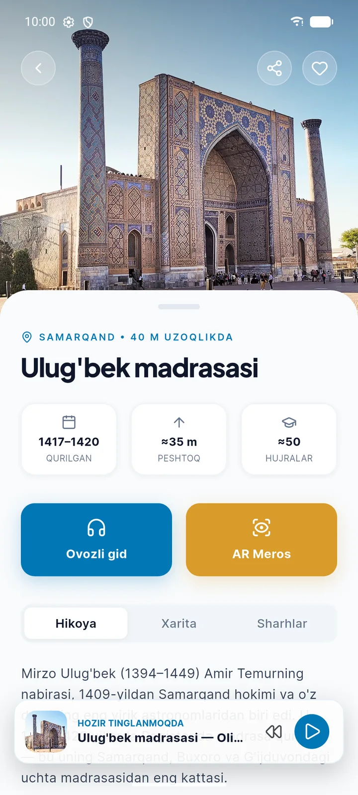
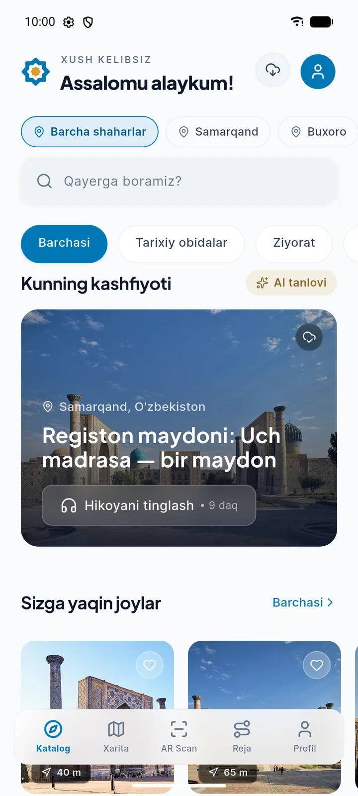
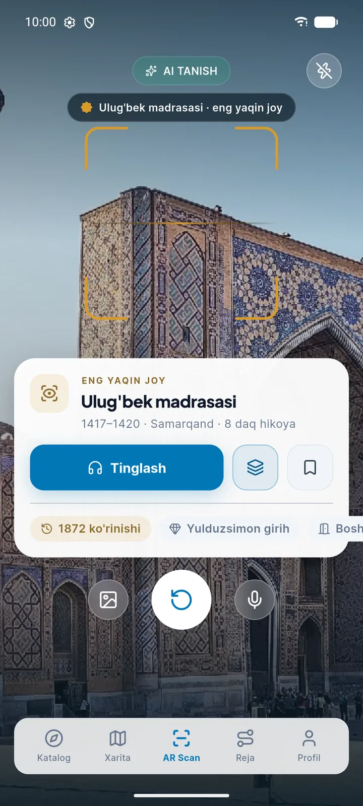
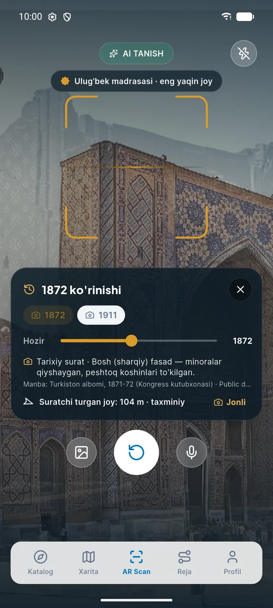
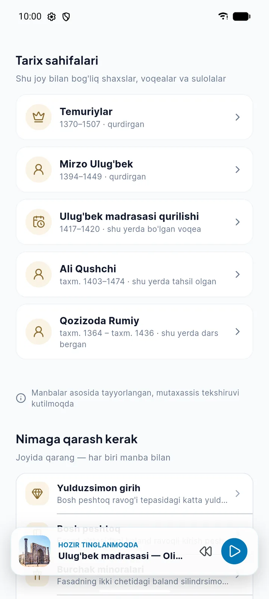
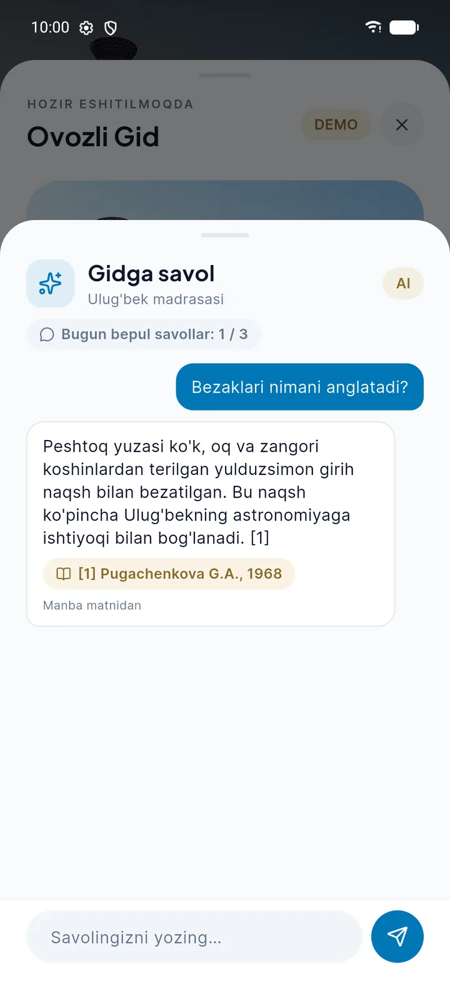
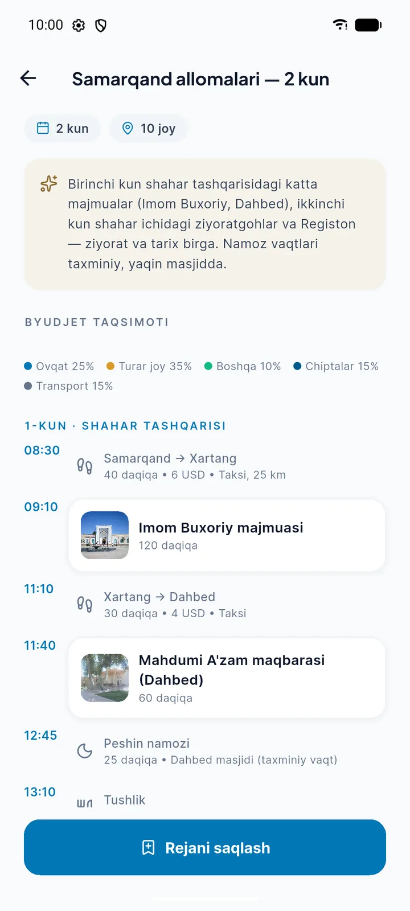
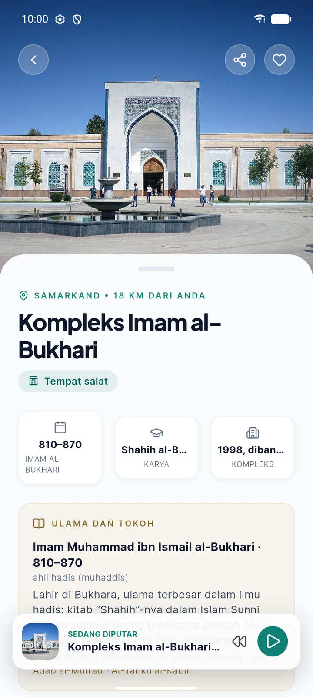
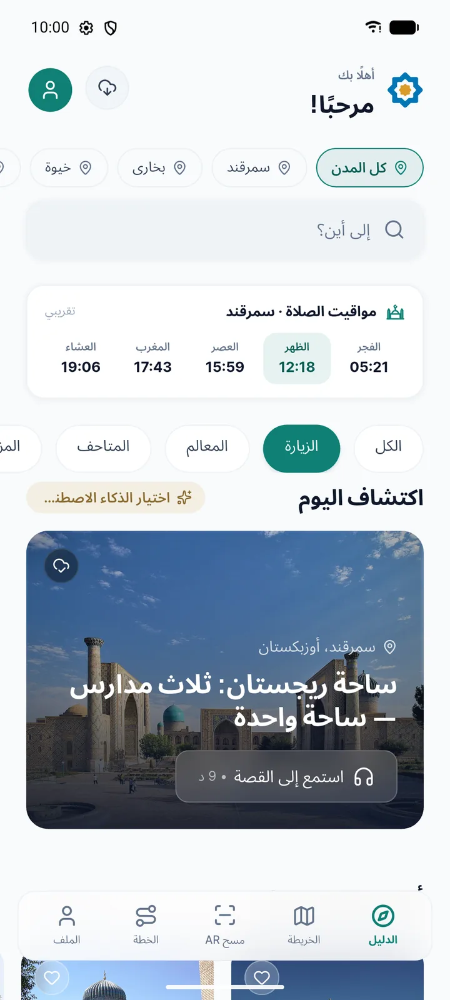
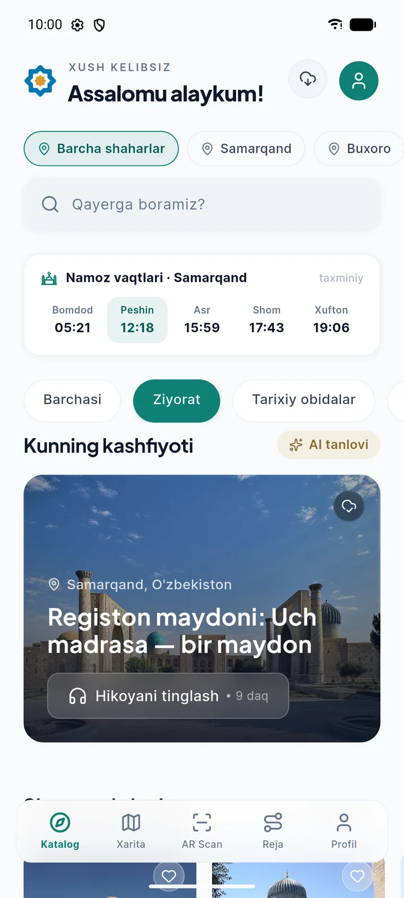

Gid hamma uchun emas
Shaxsiy gid qimmat va band. Indonez, malay yoki arab tilida gapiradigan gid esa deyarli yo‘q.
Meros.ai — O‘zbekiston tarixiy obidalari uchun AR + AI gid. Kamerani binoga qarating: ilova uni taniydi, ko‘rinib turgan bezaklarni tushuntiradi, 150 yil oldingi suratini ko‘rsatadi va savolingizga manba bilan javob beradi.

2025-yilda O‘zbekistonga 11,7 mln xorijiy turist keldi. Registon yoki Imom Buxoriy majmuasi oldida turganda ularning tanlovi hali ham uchta: gid yollash, qisqa yozuvni o‘qish yoki internetdan qidirish.
Shaxsiy gid qimmat va band. Indonez, malay yoki arab tilida gapiradigan gid esa deyarli yo‘q.
Indoneziya va Malayziyadan aynan Imom Buxoriy, Imom Termiziy, Naqshband merosi uchun kelishadi. Ular haqida ishonchli, joyida ishlaydigan kontent ularning tilida yo‘q.
30 kishilik guruhda 3–4 xil til bo‘ladi. Gid bitta tilda gapiradi, qolganlar faqat suratga tushadi.
Quyidagi rasmlar — ishlab turgan ilovaning skrinshotlari (Android), maket emas. Ilova mehmon rejimida ochiladi: ro‘yxatdan o‘tish faqat reja yoki sevimlilarni saqlash uchun kerak.
Ilova ochilishi bilan yaqin atrofdagi obidalar masofasi bilan chiqadi. Shahar va tur bo‘yicha saralash mumkin: tarixiy obidalar, ziyoratgohlar, muzeylar. Kontent bir marta yuklanadi va keyin internetsiz ochiladi.

Sun’iy intellekt suratdagi obidani 5 km radiusdagi bazadan tanlaydi va binoda ko‘rinib turgan elementlarni (peshtoq, girih naqsh, minoralar) belgilaydi. Pastda shu bino bo‘yicha hikoya, 1872-yil ko‘rinishi va elementlar chiqadi.

Kadr ustiga 1872-yilgi «Turkiston albomi» va 1911-yilgi Prokudin-Gorskiy suratlari qo‘yiladi. Slayder bilan «hozir» va «o‘shanda»ni solishtirasiz. Ilova suratchi turgan nuqtani ham ko‘rsatadi: o‘sha joyga borsangiz, ko‘rinish aynan ustma-ust tushadi.

Har bir obida uni qurgan, unda o‘qigan va dars bergan shaxslar, sulolalar va voqealar bilan bog‘langan. Ulug‘bek madrasasidan Ali Qushchiga, undan rasadxonaga o‘tasiz. Graf hozir 70 ta shaxs, voqea va sulolani 215 ta bog‘lanish bilan birlashtiradi.
«Nimaga qarash kerak» bo‘limi joyida e’tibor berish kerak bo‘lgan bezak va qismlarni ko‘rsatadi, har biri manbasi bilan.

Hikoyani tinglab turib savol berish mumkin. Javob faqat tekshirilgan matn bo‘laklaridan tuziladi va har birida manba ko‘rsatiladi: kitob, muallif, yil. Bepul rejimda kuniga 3 ta savol, pass bilan kuniga 50 tagacha.

Kurator tuzgan bir va ko‘p kunlik rejalar: soatma-soat marshrut, transport, taxminiy narx va byudjet taqsimoti. Ziyorat rejalariga namoz to‘xtashlari avtomatik qo‘shiladi. Rejani saqlash mumkin, tur operatorga so‘rov yuborish ham mumkin. To‘lov ilovada emas, operator bilan amalga oshiriladi.

Interfeys va kontent 5 tilda: o‘zbek, rus, ingliz, indonez va arab. Arab tilida ekran to‘liq o‘ngdan chapga aylanadi. Til almashganda telefondagi kesh o‘chirilmaydi, matnlar joyida yangilanadi.


Skrinshotlar 2026-yil oktabrda Android emulyatorida, sinov serveri bilan olingan. AR Skan uchun telefon galereyasidagi surat ishlatilgan (ilovadagi «galereyadan» funksiyasi orqali).
Profilda «Sayohat uslubi → Ziyorat» tanlansa, ilova fokusini o‘zgartiradi: katalog o‘sha, lekin ziyorat obyektlari oldinga chiqadi. Butun katalog ikkala uslubda ham ochiq.

Kontent bir marta yuklanadi va telefonda saqlanadi. Saqlangan reja va o‘zgarishlar navbatga yoziladi, internet qaytgach o‘zi yuboriladi.
Internet kerak bo‘ladiganlar: AI orqali obidani suratdan tanish va AI savol-javob. Internet bo‘lmasa, ilova eng yaqin obidani GPS bo‘yicha ko‘rsatadi va tayyor savol-javoblarni ochadi.

Meros bron va chipta sotmaydi: mehmonxona, transport va to‘lov — milliy turizm platformasi va operatorlarning ishi. Biz obida oldidagi tajribani beramiz va ular bilan ishlaymiz.
Guruhdagi har bir sayyohga pass kodi beriladi — har kim o‘z tilida eshitadi. Operatorning o‘z kabineti, tayyor ko‘p kunlik rejalari va sayyohlardan keladigan so‘rovlar ro‘yxati bor.
Kirishdagi QR kod obida sahifasini ilovada yoki brauzerda ochadi. Litsenziya asosida kontentni admin panelda o‘zi boshqaradi va tashrif statistikasini ko‘radi.
Mehmonga shahar pass’ini sovg‘a yoki qo‘shimcha xizmat sifatida beradi. Restoran va mehmonxonalar xaritada halol va namozxona belgilari bilan chiqadi.
Katalog, xarita, qisqa ma’lumot, hikoyaning birinchi bobi va kuniga 3 ta AI savol.
To‘liq audio gid, kuniga 50 tagacha AI savol, AR va vaqt mashinasi, offline paket. Rejalashtirilgan narx: shahar — $10 (30 kun), butun O‘zbekiston — $15 (60 kun).
Operator, majmua va mehmonxonalar uchun: pass kodlar partiyasi, o‘z brendi, statistika.
Bosqich — MVP. Mahsulot to‘liq ishlaydi, lekin hali do‘konlarda emas va real foydalanuvchilar bilan sinalmagan. Android ilova (APK) saralashdan keyin namoyish etiladi.
Mahsulotni g‘oyadan ishlaydigan MVP’gacha 8 haftada yakka o‘zi qurgan: mobil ilova, server, admin panel va kontent.